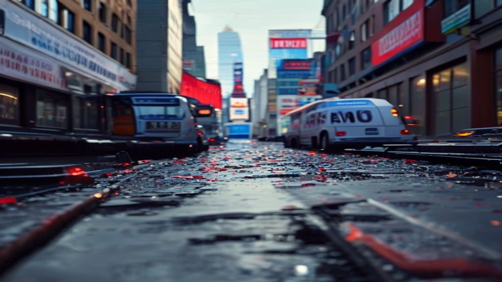

新闻第一线大爆炸！伊朗深夜升黑烟美撤德国5千军队
【新闻第一线】大爆炸！伊朗深夜升黑烟 美撤德国5千军队 【新唐人北京时间2026年05月02日讯】今日焦点：伊朗深夜惊现黑烟！五角大楼从德国撤军5千人；16个美军基地受损？川普藏后手！密告国会不需授权，随时开战；伊朗官员扬言炸美国「宫殿」；中国爆发农民工失业潮！ 战火重燃？美军16基地受损 伊库姆市遇袭 今天是5月1日，星期五，首先关注中东前线的突发消息，《今日俄罗斯》的消息显示，爆炸声响彻了以色……
成都无差别撞人事件舆论批中共洗脑教育灌输仇恨 - 新唐人电视台
成都无差别撞人事件 舆论批中共洗脑教育灌输仇恨 【新唐人北京时间2026年05月02日讯】中国四川成都，今天发生轿车无差别冲撞人群事件，多人受伤倒地。肇事车辆在撞击前，突然从最左车道向右急转，然后立刻加速冲撞正在穿越斑马线的人群，并在肇事后继续前进，造成多人倒地。相关画面显示伤亡情况严重。更多信息等待进一步披露。
19岁女学院生遭捅61刀弃尸4嫌犯延扣3至7天助 ...
0502 八度空间午间新闻 1230 网络直播【今日焦点】延扣4嫌犯查弃尸案 扩大搜寻坠沟渠9岁女童 特朗普不满意伊朗新方案 · 2 2026。此事引发社会各界的普遍关注与热议。相关领域专家就此议题发表了专业见解。有关部门正在积极研究应对策略与方案。业内人士普遍认为这将产生重要影响。多家主流媒体对此进行了深度报道分析。

八度空间华语新闻ǁ 8 网络直播今日焦点国 ...
0502 八度空间华语新闻 8 网络直播【今日焦点】国阵希盟下周商森大臣人选 19岁学院生命案4人延扣 藏毒心虚街头警匪追逐。此事引发社会各界的普遍关注与热议。相关领域专家就此议题发表了专业见解。有关部门正在积极研究应对策略与方案。业内人士普遍认为这将产生重要影响。多家主流媒体对此进行了深度报道分析。
骇人画面曝!肇事车失控1家3口背后高速撞台视晚间新闻
0502晚间大头条：骇人画面曝肇事车失控1家3口背后高速撞【台视晚间 伊朗不排除使用水雷海豚突破美军封锁20260502 中央社全球晚间新闻。此事引发社会各界的普遍关注与热议。相关领域专家就此议题发表了专业见解。有关部门正在积极研究应对策略与方案。业内人士普遍认为这将产生重要影响。多家主流媒体对此进行了深度报道分析。
白宫记者晚宴枪击疑犯“很可能”是以特朗普和其他官员为攻击目标
美国代理司法部长：白宫记者晚宴枪击疑犯很可能是以特朗普和其他官员为攻击目标 美国代理司法部长托德布兰奇（ ）表示，当局相信，试图闯入白宫记者晚宴的枪击疑犯，很可能是以美国总统唐纳德特朗普（ ，川普）及其政府官员为攻击目标。 警方指，疑犯为31岁男子科尔托马斯艾伦（ ）。他于周六（4月25日）在华盛顿一间酒店举行的活动期间，于一个保安检查点附近开枪，其后被拘捕。
今日国际新闻重点：特朗普签令加强制裁古巴扬言美军结束 ...
今日国际新闻重点：特朗普签令加强制裁古巴扬言美军结束伊朗战事后「接管古巴」美国廉航 停运成伊朗战事中首间倒闭航企无线新闻。此事引发社会各界的普遍关注与热议。相关领域专家就此议题发表了专业见解。有关部门正在积极研究应对策略与方案。业内人士普遍认为这将产生重要影响。多家主流媒体对此进行了深度报道分析。目前各方正在保持密切沟通与协调。
伊朗提交最新谈判方案，特朗普称“不满意”，并证实“愿意达成协议”
关注我们 打开微信，点击底部的发现，使用 扫一扫 即可将网页分享到我的朋友圈。 伊朗提交最新谈判方案，特朗普称不满意，并证实愿意达成协议 特朗普说，伊朗方面想达成协议，但他们必须想出合适的协议，目前我对他们提出的方案还不满意。美伊现在通过电话进行谈判，已取得一些进展，但他不确定最终能否达成协议。 特朗普证实，他已听取美军中央司令部关于军事选项的最新简报，并称自己有让军事升级和达成协议两个选项，但更……
彰显强大韧性和活力的中国经济
彰显强大韧性和活力的中国经济 2026年05月02日0810 来源：人民网－人民日报222 订阅取消订阅已收藏收藏大字号 4月28日，习近平总书记主持中共中央政治局会议，分析研究当前经济形势和经济工作。会议认为，今年以来，以习近平同志为核心的党中央加强对经济工作的全面领导，着眼全局、前瞻布局，各地区各部门靠前发力、综合施策，我国经济起步有力，主要指标好于预期，彰显强大韧性和活力。
贯彻落实党的二十届四中全会和中央经济工作会议精神 深入推进数字中国建设——全国数据工作会议在京召开-国家数据局
贯彻落实党的二十届四中全会和中央经济工作会议精神 深入推进数字中国建设——全国数据工作会议在京召开 2025年12月29日至30日，全国数据工作会议在京召开。会议以习近平新时代中国特色社会主义思想为指导，全面贯彻党的二十大和二十届历次全会精神，认真落实中央经济工作会议部署、全国发展和改革工作会议要求，总结2025年数据工作，部署2026年重点任务。国家发展改革委党组书记、主任郑栅洁出席会议并讲话。
中华人民共和国国民经济和社会发展第十五个五年规划纲要
中华人民共和国国民经济和社会发展第十五个五年（2026－2030年）规划纲要，根据《中共中央关于制定国民经济和社会发展第十五个五年规划的建议》编制，主要阐明国家战略意图，明确政府工作重点，引导规范社会主体行为，是十五五时期我国全面建设社会主义现代化国家的宏伟蓝图，是全国各族人民共同的行动纲领。 十五五时期在基本实现社会主义现代化进程中具有承前启后的重要地位，是夯实基础、全面发力的关键时期，必须不懈……
科技新观察从两会科技热词看“十五五”创新潮——2026年全国两会观察（上）
科技新观察从两会科技热词看十五五创新潮——2026年全国两会观察（上） 人工智能、量子科技、脑机接口、智能经济新形态、强化企业科技创新主体地位……今年全国两会期间，这些科技热词有的刷屏社交网络，有的被代表委员热议，有的首次被政府工作报告提及，还有的被写入十五五规划纲要。这些科技热词既体现了国家科技战略布局，也折射了全民对科技创新的高度关注。
经济日报要闻
01版要闻 · 筑牢科技根基勇攀科学高峰 · 人工智能加速赋能千行百业 · 图片新闻 · 餐饮业拓展消费新场景 · 推动便民生活圈建设扩围升级 · 02版要闻 · 加快推进水网建设全面提升综合。此事引发社会各界的普遍关注与热议。相关领域专家就此议题发表了专业见解。有关部门正在积极研究应对策略与方案。
2026科技风向标：八大趋势重塑产业与生活 - 21财经
首页 宏观 公司 金融 证券 全球 观点 汽车 新健康 人文 创投 智库 更多 大湾区 一带一路 文旅 理财 投资通 21视频 直播 品牌活动 2026科技风向标：八大趋势重塑产业与生活 2026年01月15日 1357 21世纪经济报道 21财经 陶力倪雨晴彭新孔海丽董静怡骆轶琪 21世纪经济报道记者 陶力、倪雨晴、彭新、孔海丽、董静怡、骆轶琪 2025年，人工智能、量子计算、聚变能源、航天工程……
推动科技创新和产业创新深度融合 - 光明网
全部导航 推动科技创新和产业创新深度融合 作者：郑庆华（上海市习近平新时代中国特色社会主义思想研究中心研究员、同济大学党委书记、中国工程院院士） 党的二十届四中全会审议通过的《中共中央关于制定国民经济和社会发展第十五个五年规划的建议》，对加快高水平科技自立自强，引领发展新质生产力作出战略部署，明确提出推动科技创新和产业创新深度融合。
中国“两会”五大焦点：经济增速、“十五五”开局、科技自主、高层人事安排及国防预算 - 中文
中国两会五大焦点：经济增速、十五五开局、科技自主、高层人事安排及国防预算 每年春天，在北京召开的中国两会（全国人大与全国政协会议）都是观察中国政治经济走向的重要视窗。 2026年全国政协十四届四次会议和十四届全国人大四次会议，将分别于3月4日和3月5日在北京开幕。 今年两会的特殊性在于，它不仅是涉及年度政治议程，更是为中国十五五开局。
内政外交挑战重重2026美国全球战略如何重构？
本期节目主要内容： 特朗普称俄乌接近达成协议，不排除三方会晤，普京官邸遭袭冲击俄乌和谈进程；特朗普称中期选举的核心议题将聚焦物价，。此事引发社会各界的普遍关注与热议。相关领域专家就此议题发表了专业见解。有关部门正在积极研究应对策略与方案。业内人士普遍认为这将产生重要影响。多家主流媒体对此进行了深度报道分析。

王毅：外交战线将继续当好高水平开放的推进器
王毅：外交战线将继续当好高水平开放的推进器 王毅表示，十五五规划是中国发展的新蓝图，也是中国与世界合作共赢的新愿景。今年是十五五开局之年，外交战线将积极统筹外交外事资源，为服务高质量发展、推进中国式现代化营造更加有利外部环境。重点在三个方面下功夫： 一是继续当好高水平开放的推进器。我们将结合高层交往和重大外交议程，推动共建一带一路高质量发展，扩大高标准自由贸易区网络，维护产供链稳定畅通，为中国企业……
风云激荡展担当——2026开年中国元首外交回眸
网站地图 特色栏目 语言 风云激荡展担当——2026开年中国元首外交回眸 开年以来，习近平主席以多种形式同多国领导人保持密切沟通，向中外交流活动和合作项目致贺电、贺信，同外国友好人士书信往来，书写着中国与世界友好互动的崭新故事。 忙碌的日程中，有真诚坦率的沟通，有脚踏实地的行动。世界感受到的是中国胸怀天下的视野，对和平发展的坚守和动荡变革中的担当。
外交部发言人林剑主持例行记者会
总台央视记者：中方多次就巴拿马最高法院裁定香港长和集团持有巴拿马运河两端港口运营权违宪表示，中方将坚决维护中方企业正当合法权益。请问中方下步将采取什么措施？是否已同巴方就港口下步运营进行沟通？ 林剑：中方此前已就巴拿马有关港口问题多次阐明立场。日前，中国国务院港澳事务办公室发布文章，指出巴拿马最高法院有关裁决罔顾事实、背信弃义，严重损害中国香港企业合法权益，强调中国政府坚定维护中国企业正当合法权益……
💬 评论区